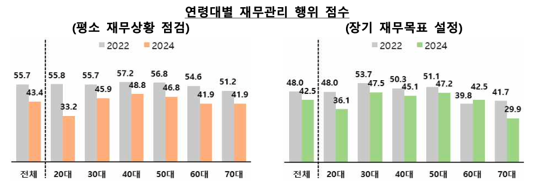
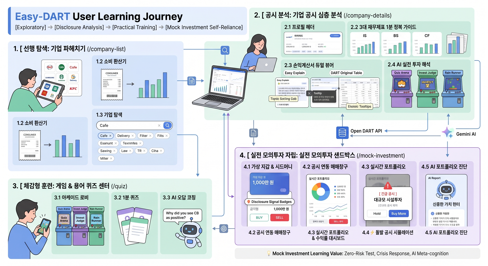
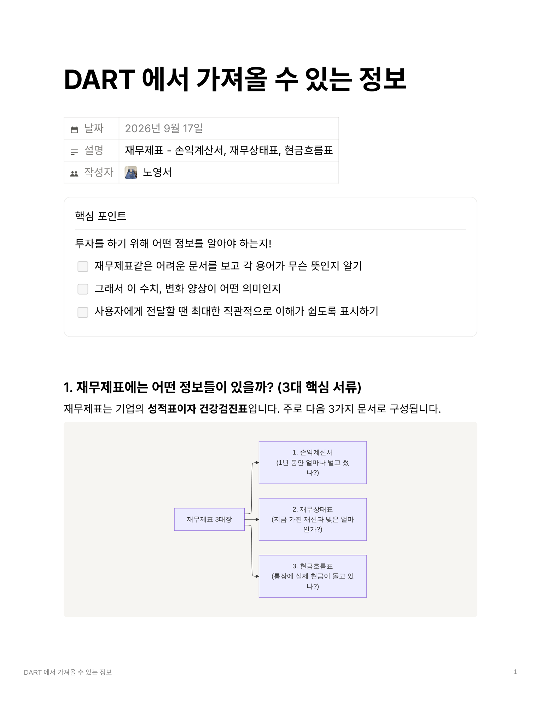
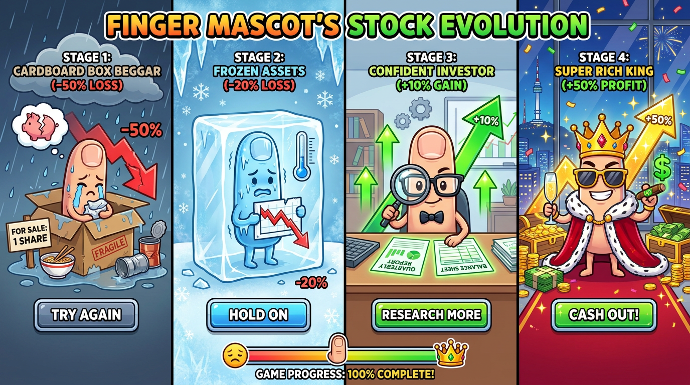
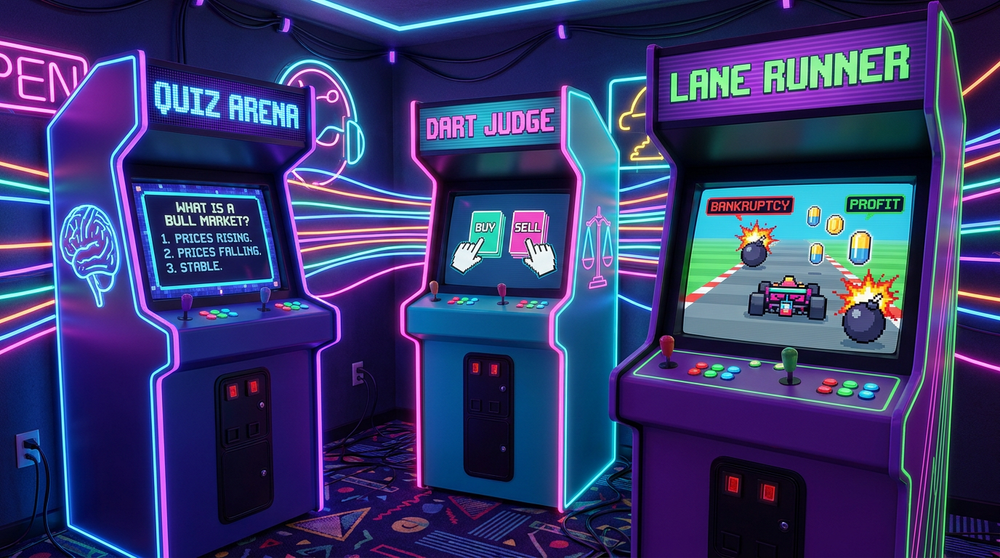
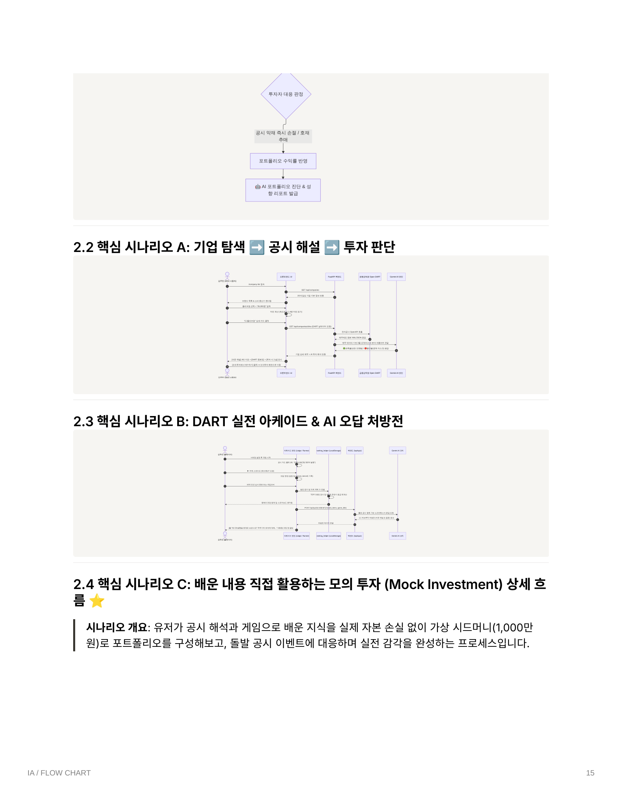
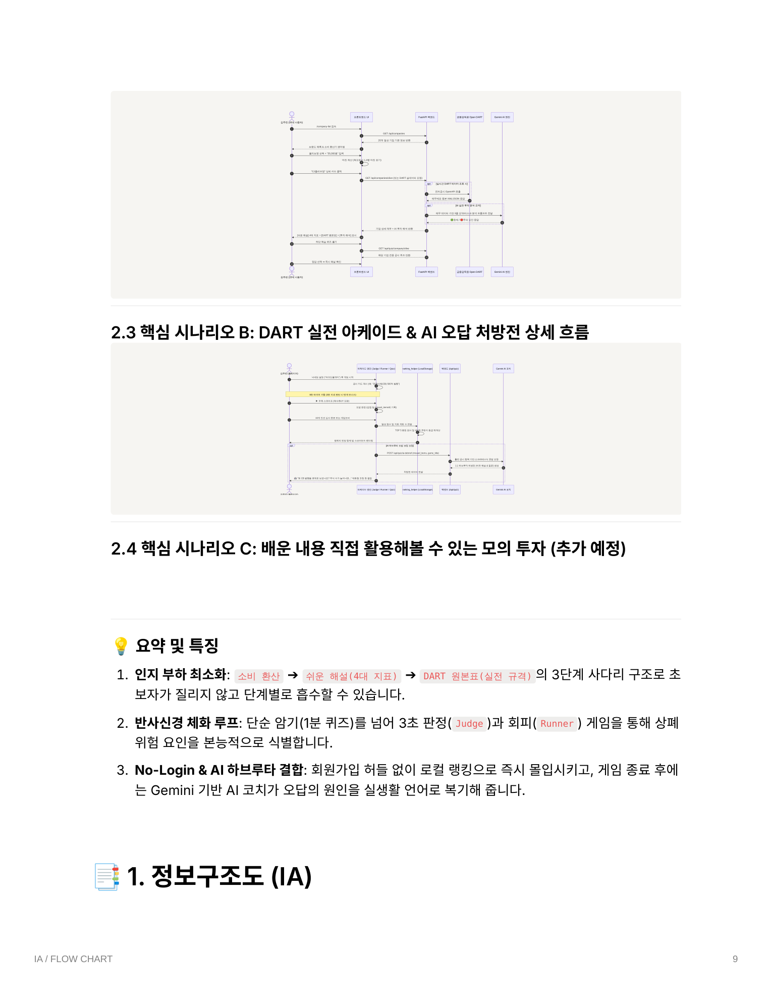

딱딱한 DART 공시를
손끝의 놀이터로!
"공시를 읽지 않은 투자는 도박이다."
사회초년생의 '묻지마 뇌동매매'를 끝내고, 3초 만에 호재와 상폐 지뢰를 판별하는
게이미피케이션 금융 교육 & 실전 분석 플랫폼
기획 배경 & BM
페르소나 / B2B2C 모델3대 핵심 기능
기업분석 / 모의투자 / 아케이드기술 & 토큰 비용
AI 아키텍처 / 극초저비용
청년 금융이해력 최하위,
'묻지마 투자'가 부른 참사
금융감독원 2024 조사 결과
20대의 재무상황 점검은 33.2점, 재무목표 설정은 36.1점으로 전 연령 최하위 기록.
금융지식 2.8점 vs 부채 3,700만원
서민금융진흥원 조사: 청년 자가진단 2.8점(5점 만점). 첫 월급·적금으로 유튜브/리딩방만 믿고 몰빵 투자.
DART 공시의 거대한 진입장벽
‘감사의견 거절’, ‘전환사채(CB)’, ‘완전자본잠식’ 등 피할 수 있는 상폐 지뢰를 한자 용어 장벽 때문에 못 읽고 물림.

"주입식 텍스트 교육은 뇌리에 남지 않는다."
직접 읽고 판단하지 않으면 조작할 수 없는 행동주의 게이미피케이션으로
20대 청년들에게 실전 공시 문해력(Financial Literacy)을 온몸으로 체득시킵니다.
페르소나 ① 김지은 (23세 대학생)
초소액 · 일상소비형 주린이"매일 쓰는 올리브영이랑 네이버웹툰 주식은 사고 싶은데, DART 보고서만 열면 머리가 아파요."
페르소나 ② 박민우 (31세 직장인)
시간효율 · 5분 팩트체크형"퇴근 후 공시를 다 볼 시간은 없고... 내가 타는 현대차나 배민부터 스스로 검증하고 싶어요."
초보자 진입장벽을 허무는
4단계 학습 사다리 체계
[선행 탐색] 일상 소비 환산
올리브영 결제액 ➔ 기업 실질 마진 체감[공시 분석] 손익계산서 듀얼 뷰
쉬운 해설(4대 지표) ➔ DART 원본표 + 속마음 번역[체감 훈련] 3대 금융 아케이드
3초 판단(심사관) & 고속 회피(러너)로 상폐 지뢰 체화[실전 자립] 실전 모의투자 샌드박스
1천만원 가상 자산 + 돌발 공시 대응 + AI 진단 리포트
합법 리워드 & B2B 제휴 기반의
지속 가능한 4대 캐시카우
게임 마스터 달성 시 제휴 증권사 계좌 개설 연계 (건당 1.5만~3.0만원 수수료 수취)
현금 직접 환전 ❌ ➔ 증권사 마케팅비 지원 소수점 주식 1,000원권 ⭕ (사행성 규제 원천 차단)
상장사 홍보 공시를 3대 아케이드 엔진에 카드 데이터로 표준 템플릿화 판매 (외주 공수 최소화)
월구독제 거부감 해소: 정밀 상폐 지뢰 진단서 및 무제한 AI 심화 코칭권 1,000~2,000원 소액 결제
| 구분 | 1년차 | 3년차 | 5년차 |
|---|---|---|---|
| MAU | 5만명 | 50만명 | 100만명 |
| 총 매출 | 5.0억 | 55.5억 | 129.0억 |
| 운영비용 | 3.0억 | 15.5억 | 35.5억 |
| 영업이익 | 2.0억 | 40.0억 | 93.5억 |
| 영업이익률 | 40% | 72% | 72% |
※ 정부 공공지원사업(TIPS, FQ향상 바우처) 병행
소비 영수증이 기업 이익으로!
일상 메타포 & 듀얼 뷰어 손익계산서
내 소비 ➡️ 기업 실적 환산기 (Hero Metaphor)
올리브영에서 35,000원 결제 시 ➔ "독도토너 1.4병 마진 기여 (영업이익 4,270원)"로 일상 소비를 기업 재무와 즉시 직결.
손익계산서 듀얼 뷰어 (Dual View)
[쉬운 해설 모드](매출➔비용➔영업익 4대 카드)와 [DART 원본표 모드](실제 전자공시 서식 + 💡 계정과목 스마트 툴팁 & 속마음 번역) 간 원클릭 전환.
AI 실전 투자 해석 (사? 말아?)
🟢 초록불(성장 모멘텀) vs 🔴 빨간불(경계 리스크) 시그널 3줄 요약 + "내 5만원은 이 회사 지분의 0.000003%" 환산.

공격력 (수익성)
방어력 (안전성)
피의 순환 (진실성)
무지성 뇌동매매의 파멸 vs
DART 정밀분석의 75% 승률
1턴 환희 ➔ 2턴 급락 ➔ 3턴 90% 확률 대형 물림 & 3개월 강제 락업
영업익·부채비율 확인 후 3회 분할매수 ➔ 75~88% 고승률
-15% 하락 시 마진콜 즉시 청산
평단가 변동 원리 동적 인터랙션
- 📦🪙 골판지 박스 거지 핑거: -50% 깡통 시 등장, '주주배정 유상증자' 퀴즈 맞히면 회생 지원금 100만원 수령
- 📞 주담(IR) 전화: 50% 확률 반등 탈출 vs 50% 팩트폭격 멘탈 붕괴
- 🛍️ 인생역전 플렉스 상점: 번 돈으로 컵라면(1,500원)부터 여의도 파크원 펜트하우스(1억)까지 플렉스

"읽지 않으면 피할 수 없다!"
3대 정예 금융 아케이드 라인업
주식 & 회계 기초 퀴즈 아레나
손익, 재무, 감사의견, CB, 배당 등 6대 카테고리 62개 마스터 문항. 피셔-예이츠 2단계 셔플로 고갈 없는 무한 스트림 제공.
DART 실전 투자 심사관 (BUY or SELL)
틴더 스타일 카드 스와이프: 실시간 공시 카드를 보고 우측(매수/호재) vs 좌측(손절/악재) 8초 내 판별! (⚡ 3초 번개 보너스 +100P)
DART 급행 레인 러너 (Lane Runner)
3차선 고속 질주! 호재 캡슐(영업익 서프라이즈, 자사주 소각)은 먹고, 악재 지뢰(완전자본잠식, 부채비율 900%)는 순간 회피하는 동체시력 훈련.

1:1 AI 하브루타 처방전 &
장기 기억 형성 코칭 루프
"단순히 '전환사채는 악재입니다'라고 정답만 주입하지 않습니다.
『피자 한 판을 4명이 먹고 있는데, 8명이 갑자기 새 숟가락을 들고 식탁에 앉는다면 회원님의 피자 크기는 어떻게 될까요?』처럼 유저 스스로 지분 희석의 위험을 깨닫게 유도합니다."
심사관 게임 종료 후 방금 놓친 공시 원문과 전문가 꿀팁 브리핑 제공
새싹 ➔ 지뢰 감별사 ➔ 여의도 불개미 ➔ 스마트 머니 명예의 전당 등극

▲ 오답 공시 발생 시 Gemini가 JSON 기반 문답 처방전을 백엔드 비동기 생성
Open DART와 Gemini의 만남,
경량 고성능 시스템 설계
금융감독원 Open DART API (완전 무료)
일 20,000건 무료 쿼터. 20개 일상 기업의 최신 사업·감사보고서 및 손익·재무상태표 실시간 파싱.
Google Gemini 1.5 Flash (속도·비용 극대화)
분당 15 RPM, 일 1,500회 무료 티어 제공. 초당 40+ 토큰의 초고속 응답으로 인터랙티브 딜레마 카드 실시간 생성.
Cloud Run 무중단 오토스케일링 컨테이너
Python FastAPI 기반의 가벼운 비동기 엔진. 트래픽 0일 때 인스턴스 0으로 Scale-to-zero되어 유휴 서버비 0원.

기능별 1회 호출당 토큰 소비량 및 단가 산정
| 기능 및 API 엔드포인트 | 트리거 시점 | 입력 토큰 | 출력 토큰 | 1회 총 토큰 | 회당 비용(USD) | 회당 비용(원화) |
|---|---|---|---|---|---|---|
|
1:1 하브루타 오답 처방전 POST /api/quiz/ai-debrief |
게임 종료 후 오답 발생 시 | 약 200~250 | 약 120~180 | 약 400 토큰 | $0.00007 | 약 0.09원 |
|
무한 공시 딜레마 카드 생성 GET /api/quiz/ai-scenario |
신규 공시 딜레마 요청 시 | 약 150~200 | 약 100~150 | 약 300 토큰 | $0.00005 | 약 0.07원 |
|
공시 3줄 요약 & 리스크 분석 AISummaryService.summarize_report |
기업 상세 공시 분석 요청 시 | 약 500~800 | 약 200~300 | 약 900 토큰 | $0.00013 | 약 0.18원 |
안전장치 1 : 0토큰 패스 (Zero-Token Bypass)
유저가 오답 없이 퍼펙트 클리어한 경우, Gemini API를 전혀 호출하지 않고 로컬 즉시 반환으로 처리하여 토큰 소모가 정확히 0입니다.
안전장치 2 : Fallback 자동 보호 엔진
네트워크 단절, API 키 장애, 일일 쿼터 소진 시에도 에러를 내지 않고 내장된 룰베이스 템플릿으로 100% 자동 전환되어 비용 폭탄을 원천 차단합니다.
일 1,500회(월 4.5만회)까지 전액 0원,
하루 1만 회 폭증해도 월 2만 원대
| 일일 호출 수 | 월간 누적 호출 | 무료 티어 적용 | 월간 예상 비용 |
|---|---|---|---|
| 일 100회 | 3,000회 | 100% 무료 (Free Tier) | 0원 |
| 일 500회 | 15,000회 | 100% 무료 (Free Tier) | 0원 |
| 일 1,000회 | 30,000회 | 100% 무료 (1,500회 한도) | 0원 |
| 일 3,000회 | 90,000회 | 유료 전환 (종량제) | 약 8,500원 / 월 |
| 일 10,000회 | 300,000회 | 유료 전환 (종량제) | 약 28,350원 / 월 |
* 1회당 평균 400토큰(오답 처방전 기준) 산출. 백엔드 캐싱 및 0토큰 패스 적용 시 실제 지출은 이보다 30% 더 낮아집니다.
"지인 추천 '묻지마 매수'에서,
공시를 읽는 '스마트 머니'로"
정적 문서 ➔ 인터랙티브 게임
뇌동매매 실패를 직접 체화
Gemini 무료 티어 내 완벽 운영
Easy-DART는 단순한 오락 웹앱이 아닌, 20대 사회초년생의 소중한 자산을 지켜주는 '실전 금융 방패'이며, 증권사 B2B2C 제휴와 공공 바우처를 결합해 월 1만원 미만의 서버비로 연 100억 대 성장을 이뤄낼 독보적 에듀테크 플랫폼입니다.
Q1. 퀴즈 문항 고갈 우려는 없나요?
62문항 마스터 DB에 2단계 피셔-예이츠 셔플 탑재 + Gemini 기반 실시간 동적 딜레마 생성 파이프라인으로 무한 공급 가능합니다.
Q2. 기존 주식 앱과 무엇이 다른가요?
조작과 독해의 일체화(3초 스와이프/차선변경) + 소크라테스식 1:1 하브루타 처방전을 통해 진짜 공시 문해력을 길러줍니다.
Q3. 배포 및 서버 비용 부담은 없나요?
Google Cloud Run 기반 무중단 컨테이너 배포 및 Scale-to-zero로 유휴비용이 0원이며, LocalStorage로 DB 비용을 최소화했습니다.